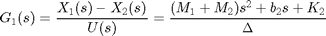
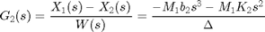
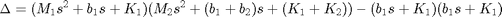
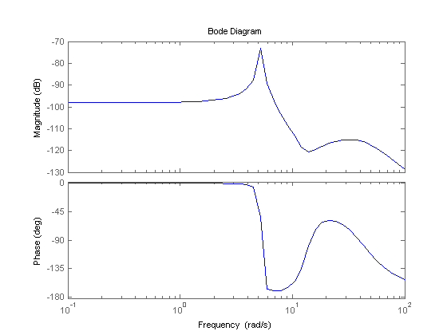
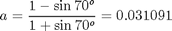
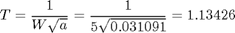
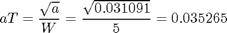
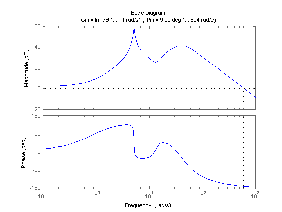
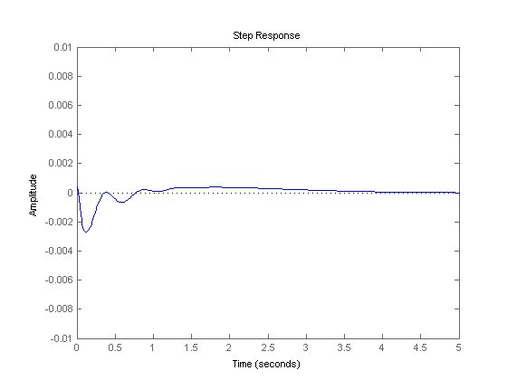
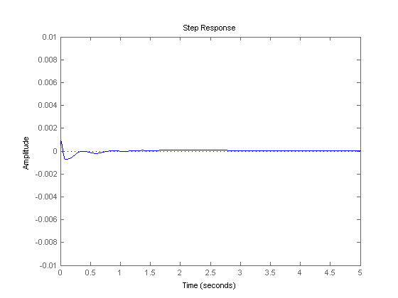

Suspension: Frequency Response Controller Design
Key MATLAB commands used in this tutorial are: tf , conv , bode , margin , feedback , step
Contents
From the main problem, the dynamic equations in transfer function form are the following:
(1)
(2)
where,
(3)
and the system schematic is the following where F(s)G1(s) = G2(s).

For the original problem and the derivation of the above equations and schematic, please refer to the Suspension: System Modeling page.
We want to design a feedback controller so that when the road disturbance (W) is simulated by a unit step input, the output (X1-X2) has a settling time less than 5 seconds and an overshoot less than 5%. For example, when the bus runs onto a 10 cm high step, the bus body will oscillate within a range of +/- 5 mm and will stop oscillating within 5 seconds.
The system model can be represented in MATLAB by creating a new m-file and entering the following commands (refer to the main problem for the details of getting those commands).
m1 = 2500; m2 = 320; k1 = 80000; k2 = 500000; b1 = 350; b2 = 15020; nump=[(m1+m2) b2 k2]; denp=[(m1*m2) (m1*(b1+b2))+(m2*b1) (m1*(k1+k2))+(m2*k1)+(b1*b2) (b1*k2)+(b2*k1) k1*k2]; G1=tf(nump,denp); num1=[-(m1*b2) -(m1*k2) 0 0]; den1=[(m1*m2) (m1*(b1+b2))+(m2*b1) (m1*(k1+k2))+(m2*k1)+(b1*b2) (b1*k2)+(b2*k1) k1*k2]; G2=tf(num1,den1); numf=num1; denf=nump; F=tf(numf,denf);
Plotting the frequency response in MATLAB
The main idea of frequency-based design is to use the Bode plot of the open-loop transfer function to estimate the closed-loop response. Adding a controller to the system changes the open-loop Bode plot so that the closed-loop response will also change. Let's first draw the Bode plot for the original open-loop transfer function. Add the following line of code to your m-file and rerun. You should get the following Bode plot:
w = logspace(-1,2); bode(G1,w)
For convenience in representing systems with different natural frequencies of the system, we normalize and scale our findings before plotting the Bode plot, so that the low-frequency asymptote of each term is at 0 dB. This normalization by adjusting the gain, K, makes it easier to add the components of the Bode plot. The effect of K is to move the magnitude curve up (increasing K) or down (decreasing K) by an amount 20*logK, but the gain, K, has no effect on the phase curve. Therefore from the previous plot, K must be equal to 100 dB or 100,000 to move the magnitude curve up to 0 dB at 0.1 rad/s. Go back to your m-file and add the following line of code to your m-file before the bode command and rerun. You should get the following Bode plot:
K=100000; bode(K*G1,w)
Adding lead control
From the Bode plot above, we see that the phase curve is concave at about 5 rad/sec. First, we will try to add positive phase around this region, so that the phase will remain above the -180 degree line. Since a large phase margin leads to a small overshoot, we will want to add at least 140 degrees of positive phase at the area near 5 rad/sec. Since one lead controller can add no more than +90 degrees, we will use a two-lead controller.
To obtain T and a, the following steps can be used:
1. Determine the positive phase needed: Since we want 140 degrees total, we will need 70 degrees from each controller.
2. Determine the frequency where the phase should be added: In our case this frequency should be 5.0 rad/sec.
3. Determine the constant a from the equation below: This determines the required space between the zero and the pole for the desired maximum phase added.
(4)
4. Determine T and aT from the following equation: These determine the corner frequencies so that the maximum phase will be added at the desired frequency.
(5)
(6)
Now let's put our 2-lead controller into the system and see what the Bode plot looks like. Add the following code to your m-file, and add a % in front of the previous bode command (if there is one). You should get the following Bode plot:
a = (1-sin(70/180*pi))/(1+sin(70/180*pi)); w=5; T=1/(w*sqrt(a)); aT=sqrt(a)/w; numc = conv([T 1], [T 1]); denc = conv([aT 1], [aT 1]); C = tf(numc,denc); margin(K*C*G1)
From this plot we see that the concave portion of the phase plot is above -180 degrees now, and the phase margin is large enough for the design criteria. Let's see how the output (the distance X1-X2) responds to a bump on the road (W). Recall that the schematic of the system is:
and the closed-loop transfer function can be derived as follows:
sys_cl = F*feedback(G1,K*C);
Plotting the closed-loop response
Let's see what the step response looks like now. Keep in mind that we are using a 0.1 m high step as the disturbance. To simulate this, simply multiply the system by 0.1. Add the following code into the m-file and rerun it. Don't forget to put % mark in front of all bode and margin commands!
t=0:0.01:5; step(0.1*sys_cl,t) axis([0 5 -.01 .01])
The amplitude of response is a lot smaller than the percent overshoot requirement and the settling time also is less than 5 seconds. Since we can see that an amplitude of the output's response less than 0.0001 m or 1% of input magnitude after 4 seconds. Therefore we can say that the settling time is 4 seconds from the above plot. From the Bode plot above, we see that increasing the gain will increase the crossover frequency and thus make the response faster. We will increase the gain and see if we can get a better response. Go back to your m-file and change numc as shown below to generate the following plot.
numc = 4*conv([T 1], [T 1]); denc = conv([aT 1], [aT 1]); C = tf(numc,denc); sys_cl = F*feedback(G1,K*C); t=0:0.01:5; step(0.1*sys_cl,t) axis([0 5 -.01 .01])
From this plot we can see that the percent overshoot is about 0.15 mm less than the previous plot's and the settling time also less than 5 seconds. This response is now satisfactory and no more design iteration is needed.